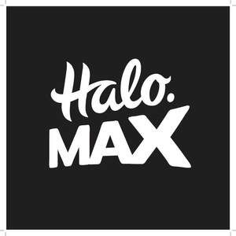

Trade Mark Journal No.2025/028 11 July 2025
UK00004229105 4 July 2025 (5,9,26,34)
Mark 1
Mark 2

- Class 5
- Tobacco free cigarettes for medical purposes; vaping devices for medical purposes; electronic cigarettes for medical purposes; imitation cigarettes known as ‘cigalikes’; imitation cigarette (including 'cigalike') kits; parts and fittings for all the aforementioned; all the aforementioned for medical purposes.
- Class 9
- Electronic cigarette batteries; mods and box mods, being batteries for electronic cigarettes with variable voltage and/or wattage controls; E-cigarette or vape kits consisting of a battery, accessories and a charger; chargers for electronic cigarettes; USB chargers for electronic cigarettes; portable charging cases for electronic cigarettes; chargers for vaporizers; accessories for electronic cigarettes and vaporizers, namely, vaporizer batteries, chargers for vaporizers, USB chargers for vaporizers and portable charging cases for vaporizers; all the aforementioned sold individually or in kit form; parts and fittings for all the aforementioned.
- Class 26
- Lanyards [cords] for wear; accessories for apparel and clothing; arm bands.
- Class 34
- Cigarettes containing tobacco substitutes not for medical purposes; articles for smokers; Electronic cigarettes; vaporizers; parts for electronic cigarettes and vaporizers, including cartridges, refill cartridges, atomizers, cartomizers, clearomizers, pods, tanks, coils and heating elements for electronic cigarettes and cases; electronic cigarette and vaporizer refill cartridges sold empty (including tanks, clearomisers, pods, cartomizers); electronic cigarette kits including ‘cigalike’ kits, tank kits, pen kits, pod kits, box mods, pod mods, all consisting of a battery, a vaporizer mechanism, a charger and either a pre-filled or refillable tank, cartridge or pod; electronic cigarette and vaporizer cartridges; electronic cigarette and vaporizer cartridges containing nicotine; electronic cigarette and vaporizer cartridges containing propylene glycol, with or without nicotine and/or other flavours; electronic cigarette and vaporizer cartridges containing vegetable glycerin, with or without nicotine and/or other flavours; electronic cigarette and vaporizer cartridges containing vegetable glycerin and propylene glycol in different ratios, with or without nicotine and/or other flavours; electronic cigarette and vaporizer cartridges containing flavorings in liquid form; electronic cigarette and vaporizer filters; electronic cigarette and vaporizer cases; cigarette boxes; mouthpieces for cigarette holders; electronic cigarette liquid (also known as ‘e-liquid’, ‘vape liquid’, ‘vape juice’ ,‘e-juice’ and including ‘shortfills’, ‘longfills’ and ‘nicotine shots’) usually comprised of propylene glycol and/or vegetable glycerin with flavorings in liquid form used to refill electronic cigarette cartridges or clearomisers/clearomizers or tanks; Electronic cigarette liquid usually comprised of propylene glycol and/or vegetable glycerin with flavorings in liquid form used to refill electronic cigarette cartridges or clearomisers/clearomizers or tanks; flavorings in liquid form used to refill electronic cigarette cartridges; flavourings in concentrated form for adding to electronic cigarette liquid (e-liquid); electronic cigarette liquid containing nicotine in salt form (also known as ‘nicotine salts’; ‘nic salts’ or ‘bar salts’); electronic cigarette liquid (e-liquid) containing extracts or concentrates of cannabidiol (known as CBD e-liquid) or other extracts of cannabis and/or hemp plants (known as cannabis e-liquid); concentrated nicotine in liquid form (often known as ‘nicotine shots ’; ‘nic shots’ and/or nicotine boosters’) for adding to electronic cigarette liquid with or without other flavoring agents; cartridges sold containing propylene glycol and/or vegetable glycerin with or without flavorings in liquid form for electronic cigarettes; accessories for electronic cigarettes and vaporizers, namely, mouthpieces for vaporizer holders; portable carrying cases for electronic cigarettes and vaporizers incorporating a charger; vaporizer liquid (e-liquid) comprised of flavourings in liquid form used to refill vaporizer cartridges; cartridges sold containing flavourings in liquid form for vaporizers; flavourings in liquid form used to refill vaporizer cartridges; holders for electronic cigarettes; electronic cigarette cleaners; tanks being containers for electronic cigarette liquid; all the aforementioned sold individually or in kit form, parts, fittings and accessories for all the aforementioned; vapes; vape devices; pod systems including refillable and prefilled pods; disposable electronic cigarettes; electronic nicotine delivery systems (ENDS); electronic heated tobacco products (including ‘heat not burn’; electronic heated tobacco devices and refills for electronic heated tobacco devices); nicotine-based products; nicotine pouches; nicotine strips; nicotine lozenges; novel tobacco and nicotine products; tobacco replacement products not for medical purposes.
RDN Group Limited